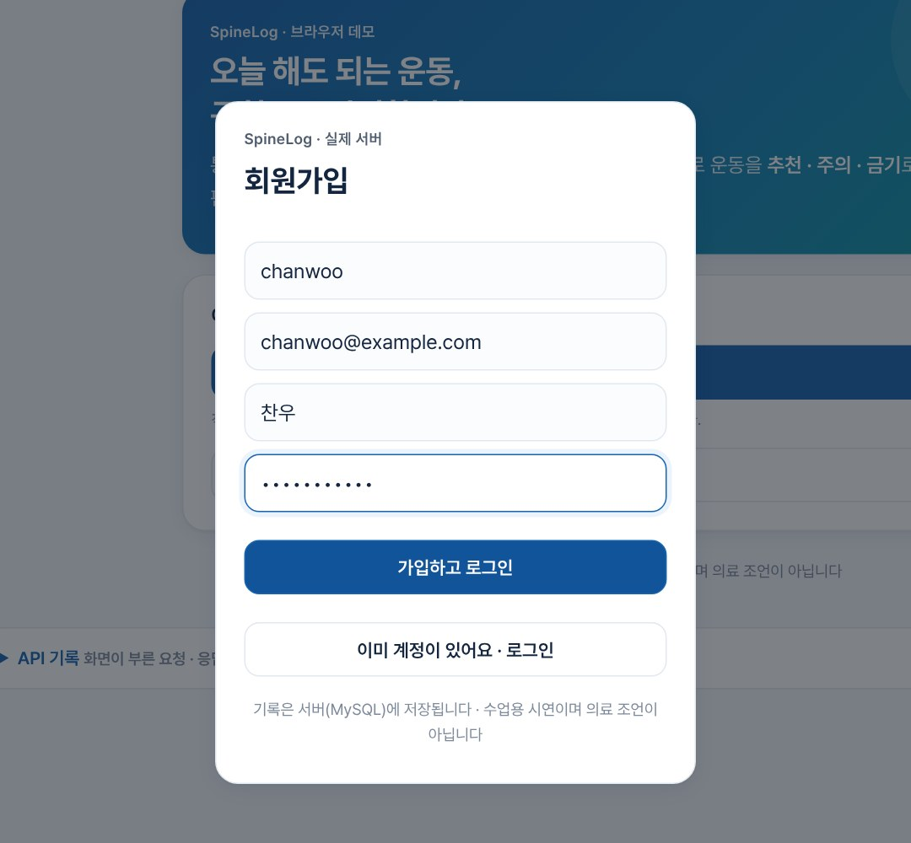
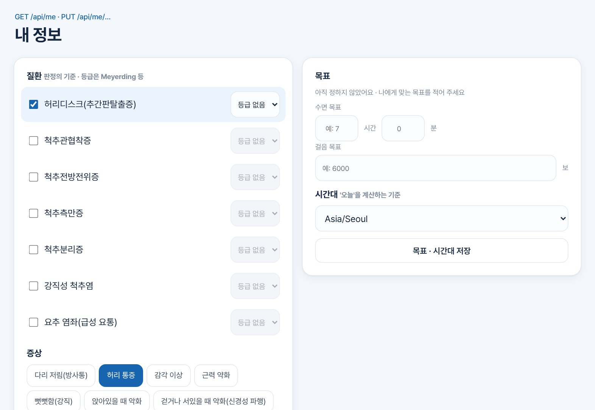
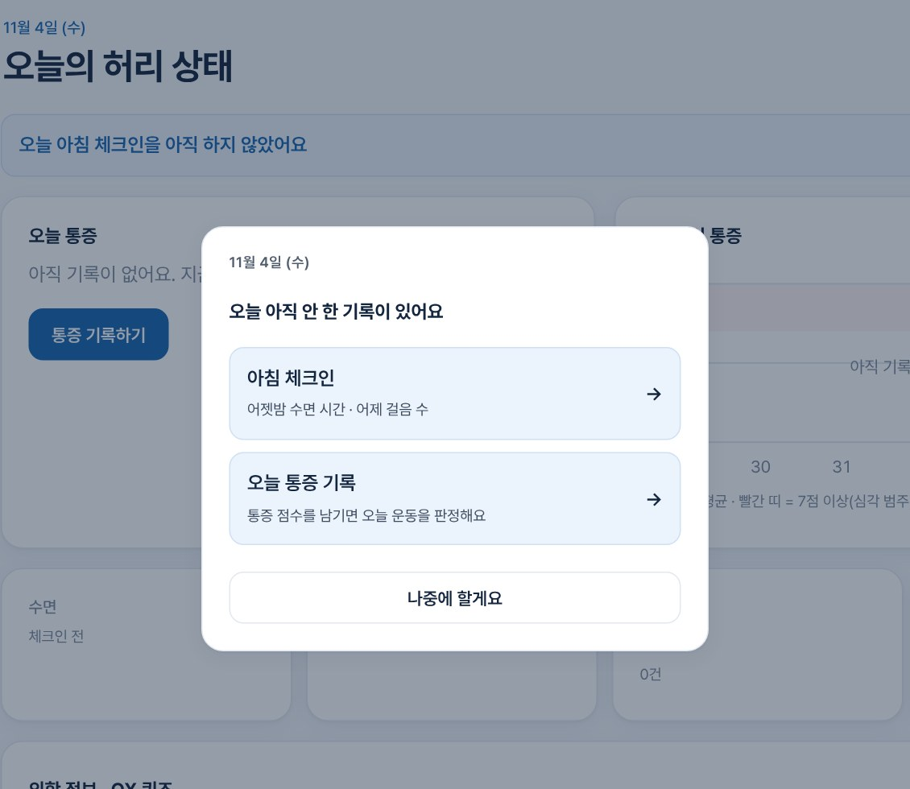
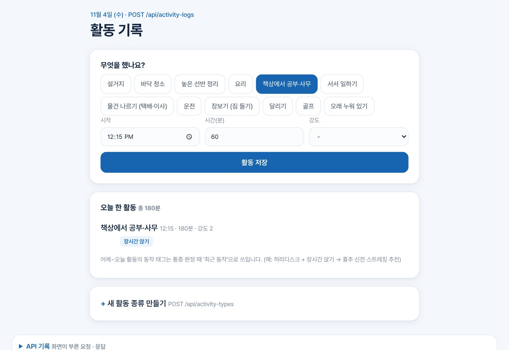
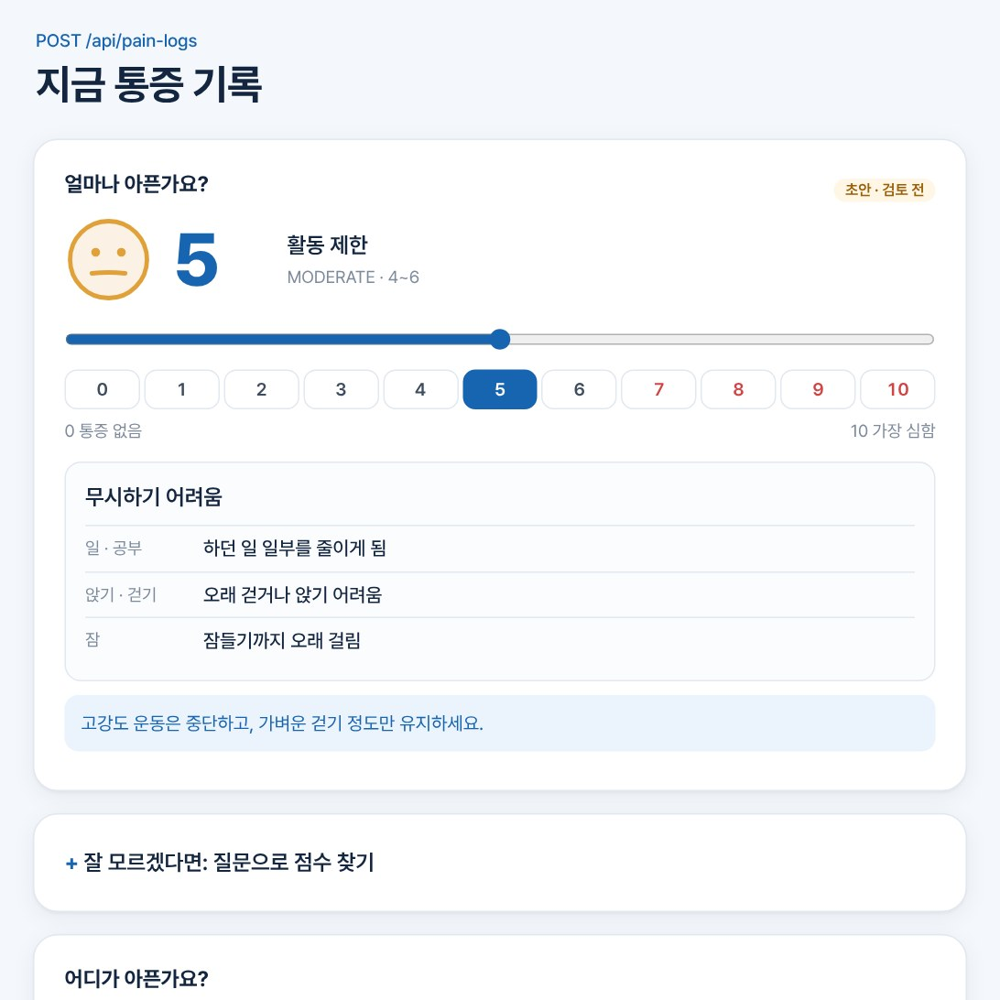
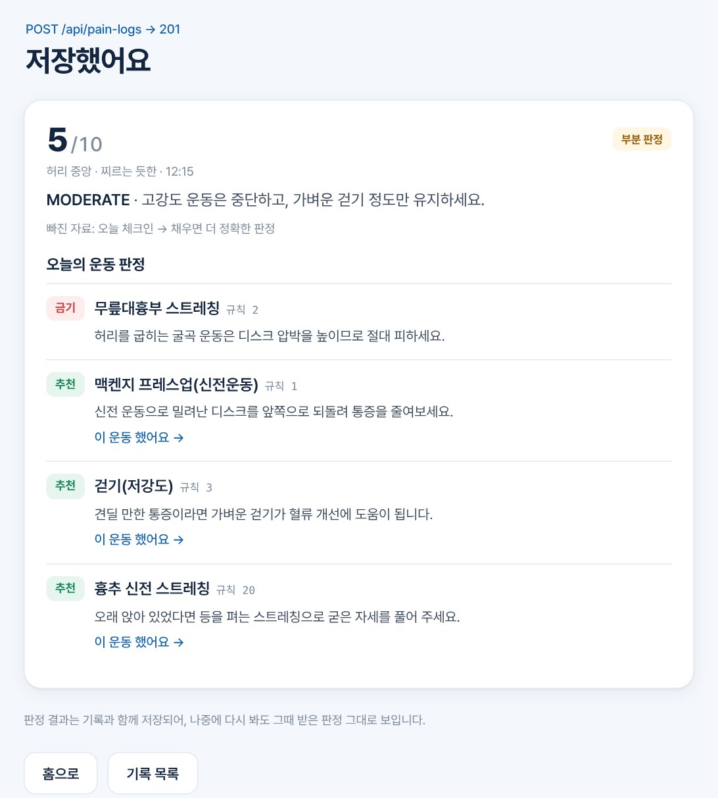
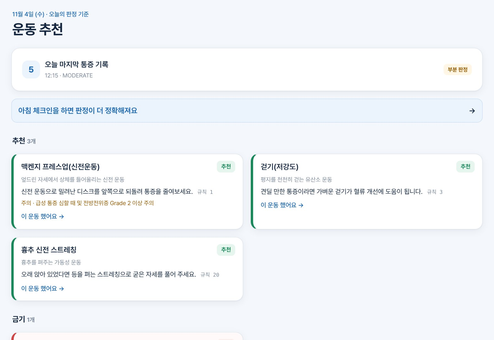
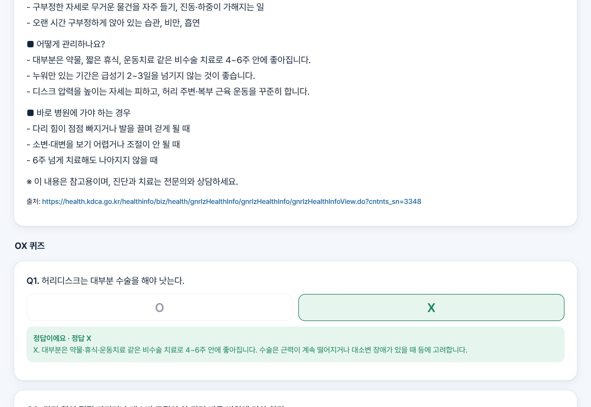

S/W PROJECT · WEEK 9
SpineLog · 로그인과 실제 데이터
박찬우 · AI소프트웨어학과
chanwoo03.github.io/SpineLog
지난 발표(Week8) 이후
LOGIN
비밀번호는 bcrypt 해시로만 저장 · 로그인하면 JWT 토큰 (24시간)
LOGIN
토큰 확인은 deps.py 한 곳 · 토큰 없거나 가짜면 401
SERVER
API + DB를 NAS Docker에서 실행 · DB 백업(mysqldump)
DATA
설거지 · 책상 공부 · 운전 등 → 숙이기 · 장시간 앉기 등
DATA
허리디스크 + 오래 앉음 → 흉추 신전 스트레칭 추천 (규칙 2개 추가)
DATA
허리디스크 1편 + 퀴즈 3개, 질병관리청 자료 기준 · 출처 표시
DB 변경은 번호 붙은 파일(마이그레이션 004~008)로 남기고, 어디까지 적용했는지 DB 표(schema_migrations)에 기록
S/W Week9 · 2
토큰 = 놀이공원 손목 밴드
1 · 가입
비밀번호 → 해시로 바꿔 저장
같은 아이디·이메일이면 409
→
2 · 로그인
해시와 비교해 맞으면 토큰 발급
틀리면 401
→
3 · 요청마다
서명 · 만료 확인 → 토큰 주인의 아이디로 API 실행
| 상황 | 결과 | 이유 |
|---|---|---|
| 토큰 없이 요청 | 401 | 누구인지 모름 → 로그인 필요 |
| 가짜 · 고친 · 기한 지난 토큰 | 401 | 서명이 안 맞거나 24시간이 지남 |
| 정상 토큰 | 200 | 토큰 주인의 기록만 저장 · 조회 |
S/W Week9 · 3
기능 흐름 1 / 4 · 실제 서버 화면

회원가입 · 로그인 /api/auth
비밀번호는 해시로 저장, 로그인하면 토큰을 받아 화면이 보관

내 질환 · 증상 등록 PUT /api/me/conditions
판정의 기준. 허리디스크 + 허리 통증을 고름
S/W Week9 · 4
기능 흐름 2 / 4

빠뜨린 기록 알림 GET /api/dashboard
들어오면 오늘 체크인 · 통증 기록이 없는지 보고 한 번 알려 줌

활동 기록 POST /api/activity-logs
책상에서 공부 3시간 → 동작 태그 "장시간 앉기"가 함께 저장
S/W Week9 · 5
기능 흐름 3 / 4 · 핵심

통증 기록 POST /api/pain-logs
0~10점 · 표정 그림 · 점수별 생활 예시로 고르기 쉽게

저장과 동시에 판정 규칙 21개 + 질환 · 활동
금기 1 · 추천 3. 오래 앉았던 활동 때문에 흉추 신전 스트레칭이 추가됨
S/W Week9 · 6
기능 흐름 4 / 4

오늘의 운동 추천 GET /api/pain-logs/{id}
추천 · 주의 · 금기로 나눠 보고, 한 운동은 바로 기록

의학 정보 · OX 퀴즈 POST /api/quizzes/{id}/attempts
질병관리청 자료 기준 · 출처 표시 · 풀면 해설
S/W Week9 · 7
만들면서 막혔던 곳
500
예전 데이터는 비밀번호가 해시가 아닌 그냥 글자 → 비교하다 에러(500) → 에러를 잡아 401로 처리
NAS
DB 준비가 느려 관리 화면이 기다리다 실패, 예전 이미지로 실행됨 → 로그를 보고 이미지를 지우고 다시 빌드
MIGRATION
같은 파일을 여러 번 실행하기도 함 → 적용 번호를 DB 표에 기록하고, 두 번 실행해도 결과가 같게 작성
S/W Week9 · 8
솔직하게 남은 것 · 11/10 ~ 11/16
· 데모 앱은 내 PC 서버에만 연결 (127.0.0.1)
· 웹 데모와 NAS 서버 연결 (바깥 접속 · HTTPS 필요)
· 의학 콘텐츠는 허리디스크 1편뿐
· 바깥에 열기 전 NAS DB 비밀번호 변경
1 · React 화면
가입 · 로그인 → 질환 등록 → 통증 기록 → 판정 결과를 화면으로
2 · 데이터 더 넣기
질환별 의학 콘텐츠 2~3편 · 출처와 함께
S/W Week9 · 9 · 감사합니다